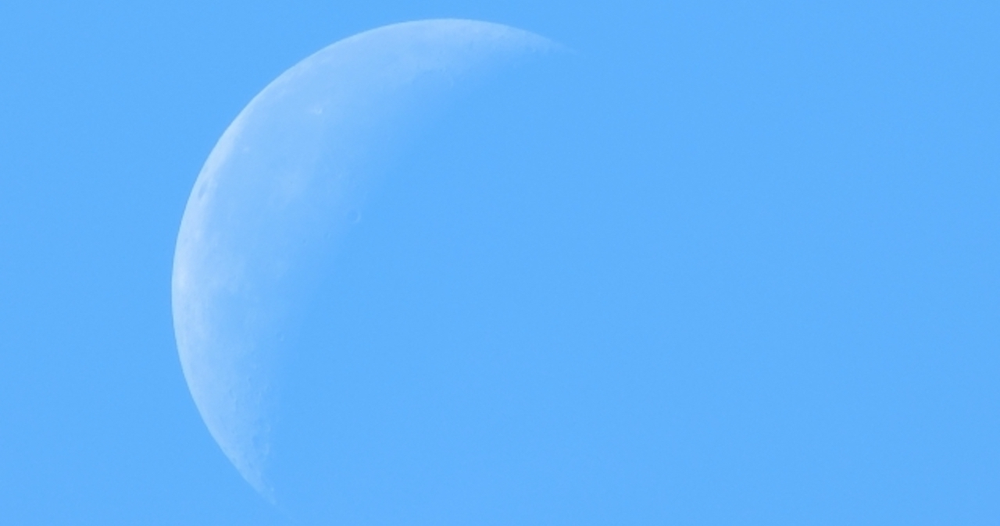

１０００年続いた人と魔族の戦いが終わり10年が経った世界。神話時代から生きる魔王ヴォルカスとその娘イーラの愛の意味を探す冒険の物語第１幕。物語のプロローグであり、ただ君の世界観を表現する章。「ヴェル」として一人世界を旅するヴォルカスとその娘のイーラの出会いの章。
魔族奴隷の男を救ったヴェルは、エリスの家で一晩を過ごす。翌日家を出た後、街で貴族兵が魔族奴隷を探していることを知る。再度エリスの家を訪れるヴェル。その家がヴェルの妻ロクシーの実家であることを知る。寂れたロクシーの部屋をみて号泣するヴェル。それに気づきイーラはヴェルを抱きしめる。
母からの手紙を読み、ヴェルとの旅立ちを決意するイーラ。 旅の目的は母の死の直前の願い「魔王城から朝日を眺めること」。移動する手段のない二人はオレンドの旅劇団と同行する。一緒に旅をする中で、イーラの中に眠っていた魔素がオレンドへ戻り、失っていた魔物だった頃の記憶を取り戻す。
戦争からの離脱を理由に虐殺される傀儡師の一族。 呆然とするオレンドを叩きのめすヴォルカス。イーラとヴェルはアキュエリへついに到着する。街の美しさに感動するイーラ。アキュエリは最も栄えた人の街である。そして、休む暇なく皆は演劇の準備に取り掛かる。イーラが書いた脚本の開演へ向けて。
魔大陸に着いたロクシーはあちこちを冒険して回った。 オレンドと一緒に外で遊び、時に城内のサラも巻き込んで暴れ回るロクシー。また、ロクシーは毎晩のようにヴォルカスの元へ通い、古代文明について話を聞く。繰り返すうちに、恋に落ちる二人。また、イーラ達の演劇は最終日を迎える。

演劇の千秋楽。イーラの母ロクシーの最後の章。 ヴォルカスがロクシーと恋仲にあることをよく思わない魔族たち。その不満を一身に受けサラはロクシーを殺すことを決意する。呪われたロクシーは、お腹にいたイーラをオレンドへ託す。ロクシー、オレンドが守りたかったもの、それは。
ただいま準備中